🖥️ The Best Work Monitors of 2026
In-depth performance breakdown, specs, and value analysis for every professional.
The monitor market in 2026 offers incredible variety for professionals from 4K productivity powerhouses to ultrawide multitasking beasts. Whether you're a programmer, designer, or business professional, choosing the right display can transform your workflow. Here are the 5 best work monitors we've tested this year, backed by real reviews and expert analysis.
Dell UltraSharp U3225QE
🏆 Best Overall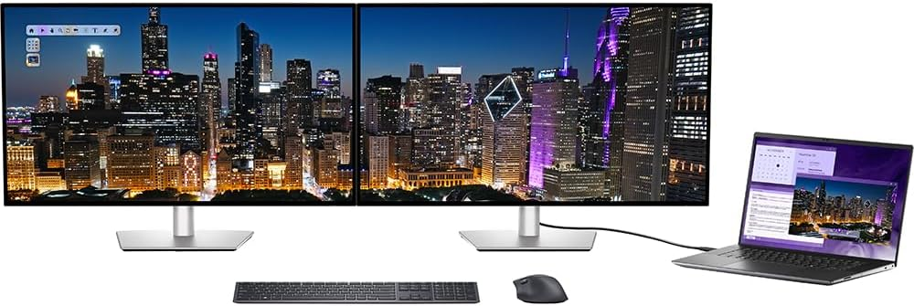
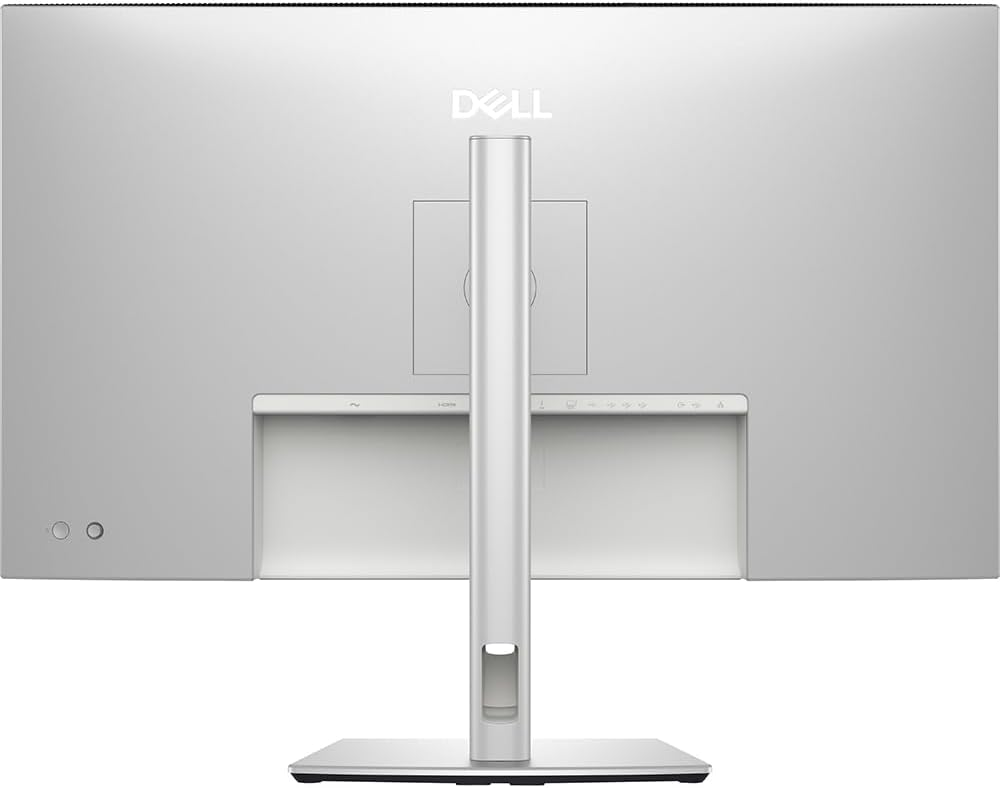
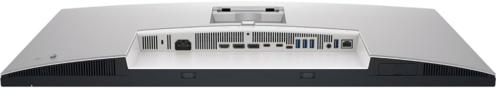
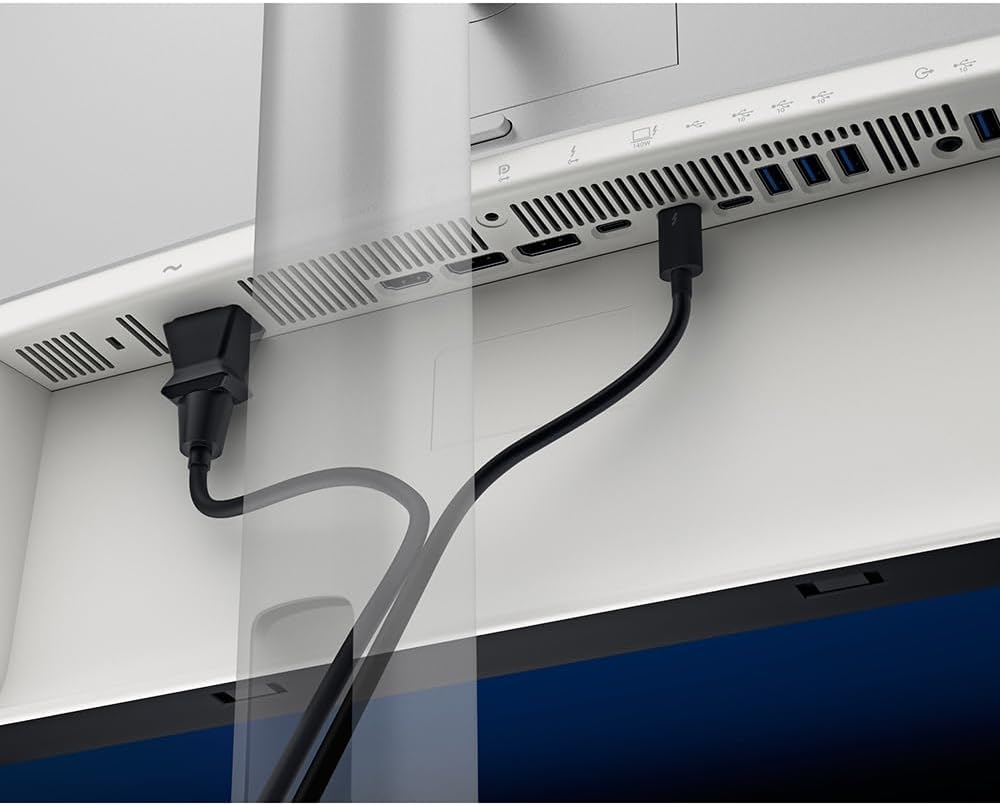
Technical Overview
The Dell UltraSharp U3225QE features IPS Black technology with a 3000:1 contrast ratio far better than standard IPS displays. The 120Hz refresh rate delivers smoother scrolling and less flicker than 60Hz monitors. With Thunderbolt 4 providing 140W power delivery, this monitor charges even power-hungry laptops while delivering 4K video and data through a single cable.
User Reviews & Feedback
"The 120Hz refresh rate makes a huge difference for productivity scrolling through documents and spreadsheets is noticeably smoother."
Verified Amazon Buyer"IPS Black technology delivers true blacks. This is the best work monitor I've ever used. The 140W charging is perfect for my MacBook Pro."
Creative Professional, Verified PurchaseKey Strengths
- IPS Black technology with 3000:1 contrast
- 120Hz refresh rate for smooth scrolling
- Thunderbolt 4 with 140W power delivery
- Ambient Light Sensor for auto brightness
- 99% DCI-P3 color gamut
- VESA DisplayHDR 600
- 4 x USB-A 10Gbps ports
- RJ45 Ethernet 2.5GbE
Technical Specifications
- Screen Size: 32" (31.5" viewable)
- Resolution: 4K UHD (3840 x 2160)
- Refresh Rate: 120Hz
- Panel: IPS Black Technology
- Contrast Ratio: 3000:1
- Brightness: 450 cd/m² (600 cd/m² HDR)
- Color Gamut: 99% DCI-P3, 100% sRGB
- Connectivity: Thunderbolt 4, DP 1.4, HDMI 2.1
- USB-C Power: Up to 140W
| ✅ Pros | ❌ Cons |
|---|---|
|
|
HP Series 7 Pro 734pm
🏆 Best Ultrawide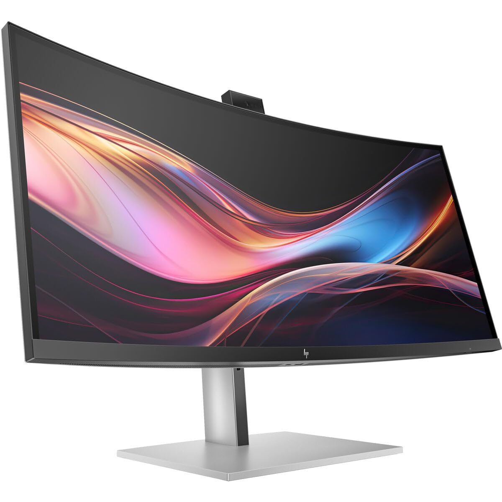
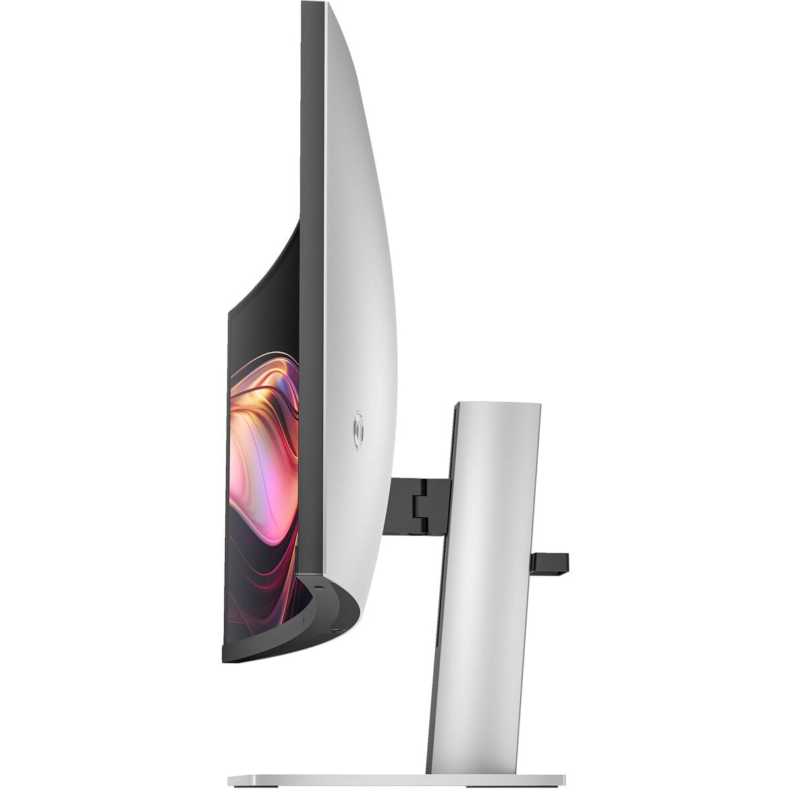
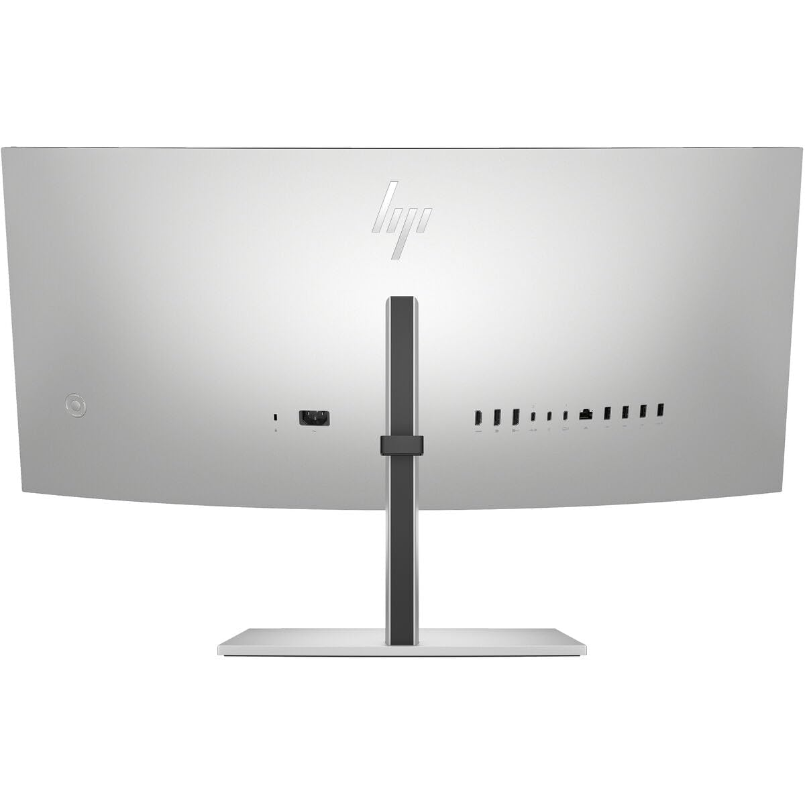
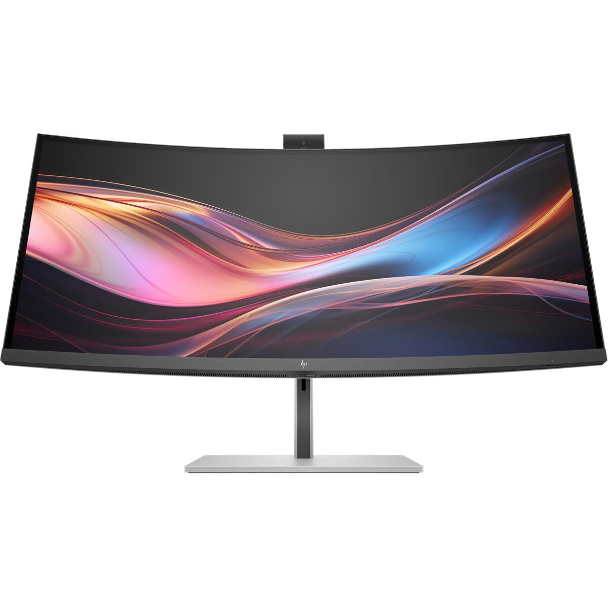
Technical Overview
The HP Series 7 Pro 34-inch WQHD Conferencing Monitor (734pm) delivers an excellent ultrawide experience with full sRGB color coverage and 120Hz refresh. It features Thunderbolt 4 connectivity, making it a great choice for laptop users who want a single-cable docking solution. The 21:9 aspect ratio provides ample horizontal space for multitasking.
User Reviews & Feedback
"The ultrawide format is perfect for my workflow. I can have three windows side by side without any issues. Thunderbolt 4 makes it a true one-cable solution."
Business Professional, Verified PurchaseKey Strengths
- Ultra-wide 21:9 aspect ratio
- 120Hz refresh rate
- Thunderbolt 4 connectivity
- Matte screen finish
- DisplayHDR 400
- FreeSync support
Technical Specifications
- Screen Size: 34"
- Resolution: WQHD (3440 x 1440)
- Refresh Rate: 120Hz
- Panel: IPS
- Contrast Ratio: 1000:1
- Brightness: 400 cd/m²
- Connectivity: Thunderbolt 4, HDMI, DP
- Aspect Ratio: 2.39:1
| ✅ Pros | ❌ Cons |
|---|---|
|
|
BenQ RD280U Programming Monitor
🏆 Best for Developers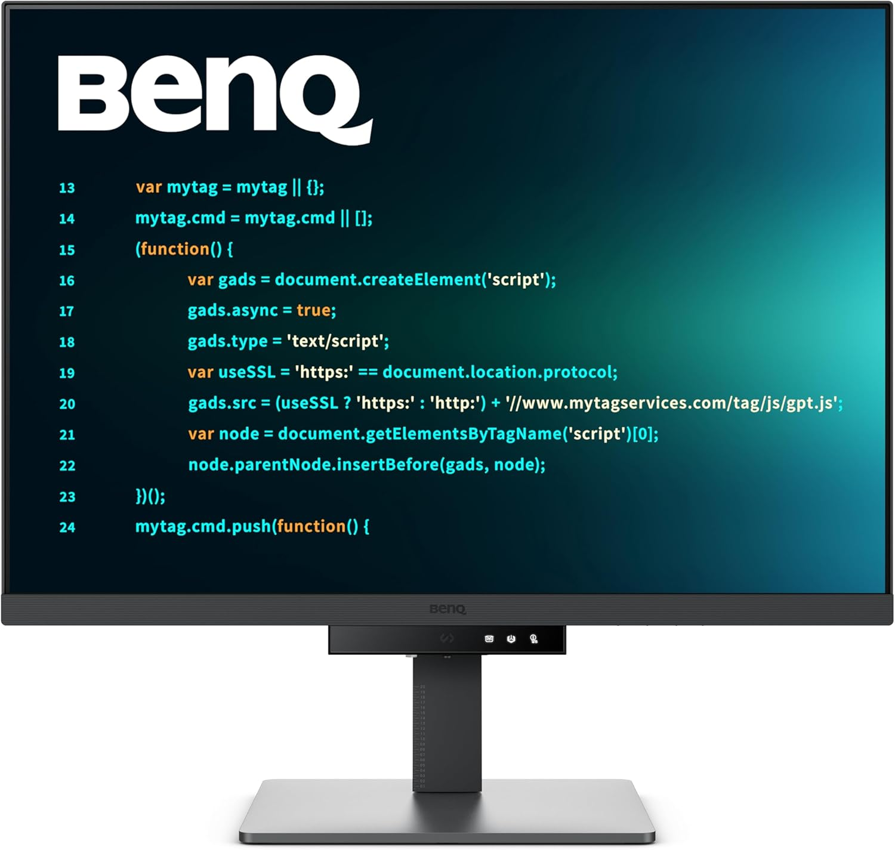
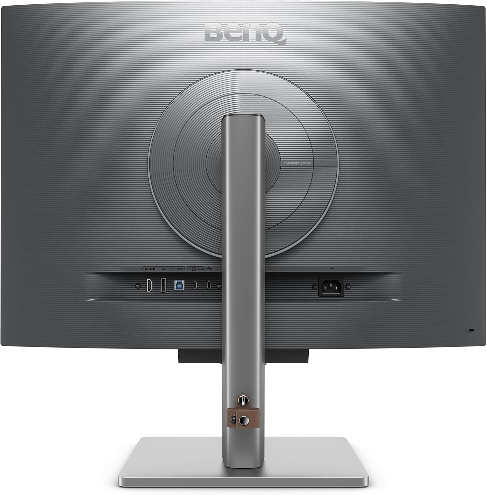
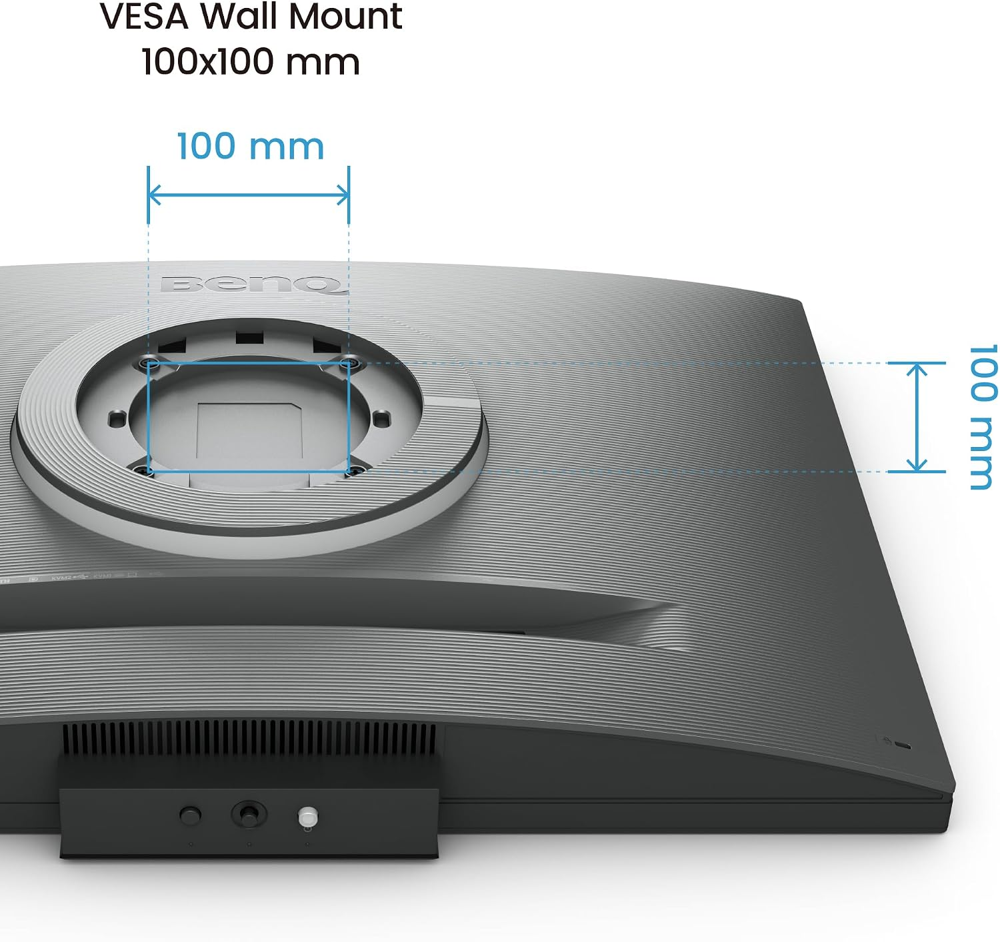
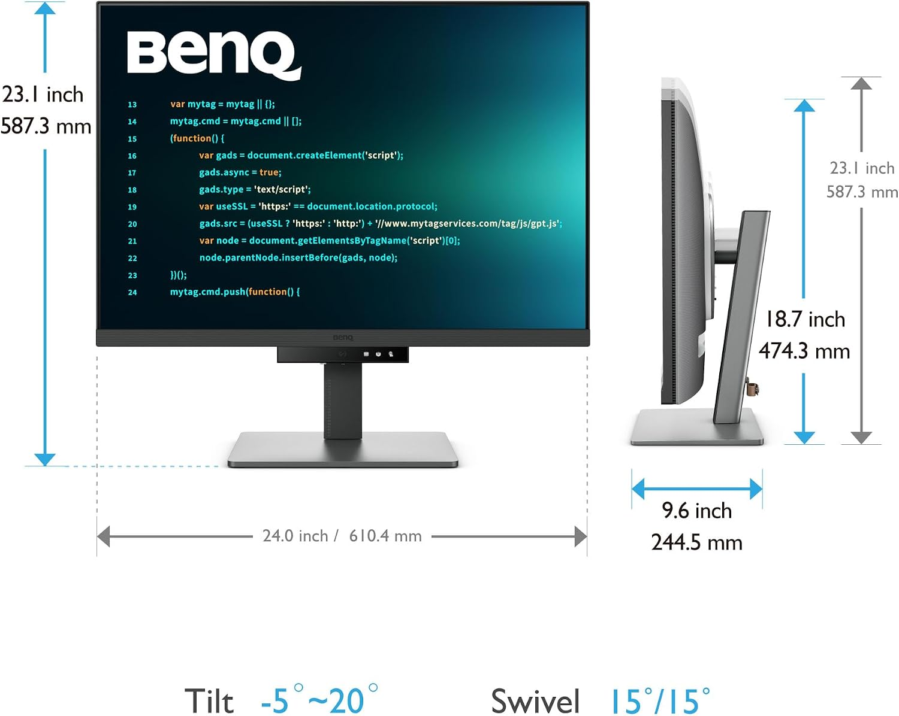
Technical Overview
The BenQ RD280U features a unique 3:2 aspect ratio that provides more vertical space than standard 16:9 monitors. For developers, this means seeing more lines of code without scrolling. The Nano Matte Panel reduces glare and reflections significantly. Purpose-built for programmers, it includes coding modes for better code differentiation and MoonHalo backlight for comfort.
User Reviews & Feedback
"The 3:2 aspect ratio is a game-changer for coding. I can see 20+ more lines of code compared to a standard 4K monitor. The Nano Matte panel is perfect for bright office environments."
Software Developer, Verified Purchase"Finally, a monitor designed for programmers. The coding modes make syntax highlighting pop. My eyes don't feel strained after 8 hours of work."
Full Stack Developer, Amazon VerifiedKey Strengths
- 3:2 aspect ratio (more vertical space)
- Nano Matte anti-glare panel
- Coding modes for better code differentiation
- MoonHalo backlight for comfort
- Brightness Intelligence Gen2
- 90W USB-C power delivery
- KVM switch
- VESA mount compatible
Technical Specifications
- Screen Size: 28.2"
- Resolution: 4K (3840 x 2560)
- Refresh Rate: 60Hz
- Panel: IPS Nano Matte
- Contrast Ratio: 1200:1
- Aspect Ratio: 3:2
- Connectivity: HDMI, USB-C
- USB-C Power: 90W
| ✅ Pros | ❌ Cons |
|---|---|
|
|
BenQ GW2486TC Office Monitor
🏆 Best Budget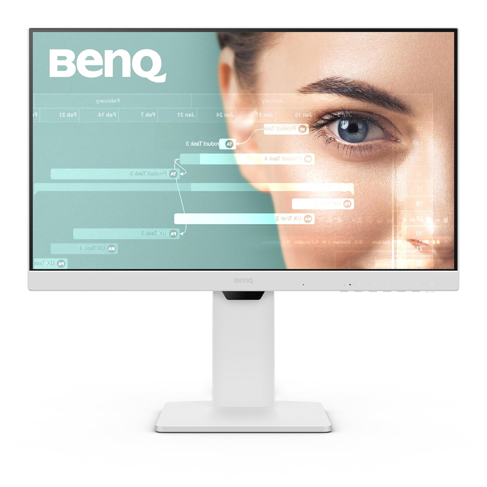
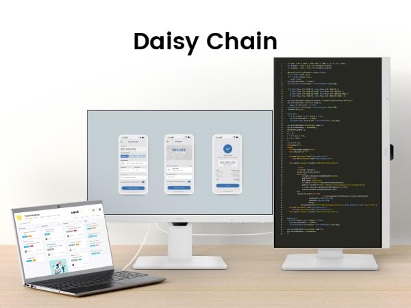
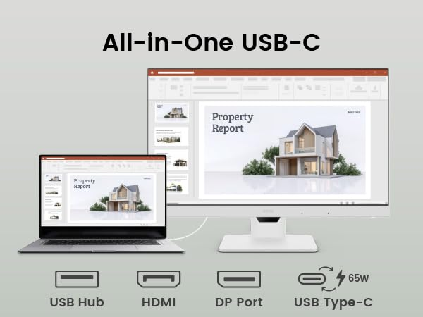
Technical Overview
The BenQ GW2486TC is an excellent budget home-office monitor with Eye-Care technology and USB-C connectivity. It includes a height-adjustable stand, built-in noise-canceling microphone, and USB-C with 60W power delivery. The Brightness Intelligence auto-adjusts brightness based on ambient light conditions.
User Reviews & Feedback
"The built-in noise-canceling microphone is a game-changer for video calls. The USB-C charging keeps my laptop powered all day. Best $170 I've spent."
Remote Worker, Verified Purchase"Perfect for my home office. The height adjustment is smooth, and the Eye-Care technology really reduces eye strain. Great value for money."
Freelancer, Amazon VerifiedKey Strengths
- Eye-Care technology for reduced fatigue
- Brightness Intelligence auto brightness
- USB-C with 60W power delivery
- Built-in noise-canceling microphone
- Height-adjustable stand
- Daisy chain support
- 99% sRGB color gamut
Technical Specifications
- Screen Size: 24"
- Resolution: FHD (1920 x 1080)
- Refresh Rate: 75Hz
- Panel: IPS
- Contrast Ratio: 1000:1
- Brightness: 250 cd/m²
- Connectivity: HDMI, DP, USB-C
- USB-C Power: 60W
| ✅ Pros | ❌ Cons |
|---|---|
|
|
MSI MPG 341CQR QD-OLED X36
🏆 Best Dual-Purpose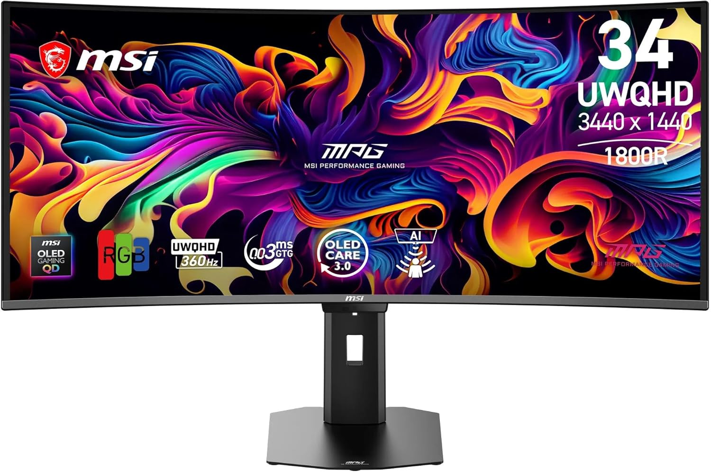
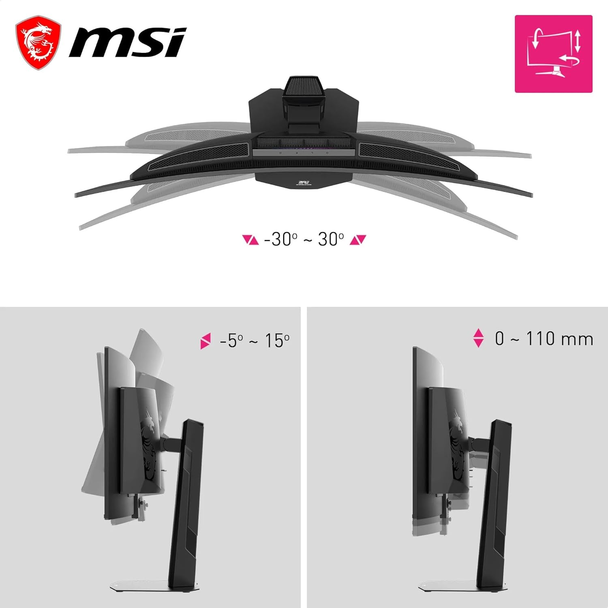
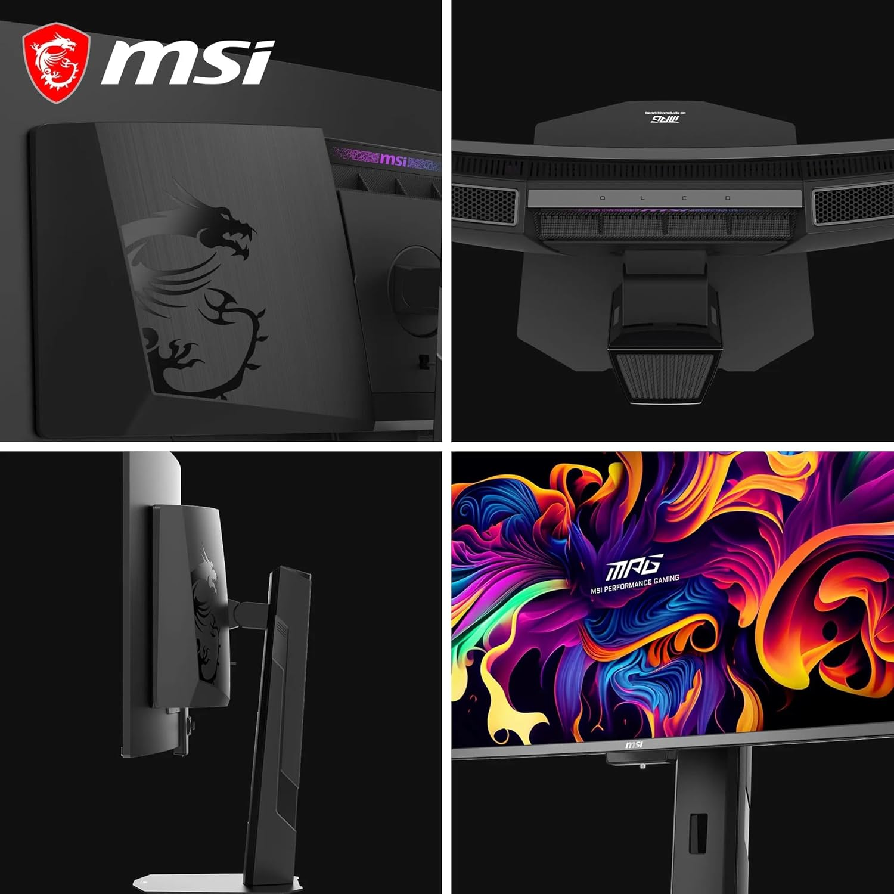
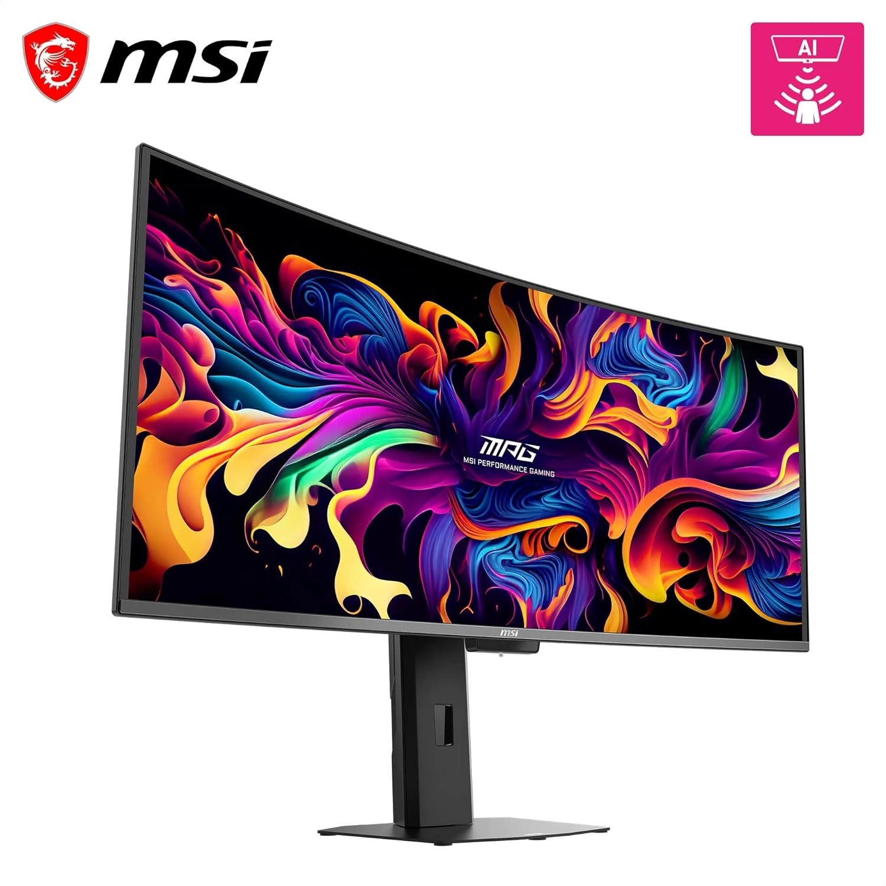
Technical Overview
The MSI MPG 341CQR features a 5th Gen QD-OLED panel that delivers sharper text and almost completely eliminates chromatic aberrations. The 360Hz refresh paired with 0.03ms response time is unmatched. Features include DisplayPort 2.1, HDMI 2.1, and USB-C with 98W Power Delivery making it a great work monitor that transitions to gaming at night.
User Reviews & Feedback
"The QD-OLED panel is stunning. Colors pop, blacks are true black, and the 360Hz refresh makes everything buttery smooth. Perfect for both work and gaming."
Creative Professional & Gamer, Verified Purchase"USB-C with 98W charging means I use one cable for my laptop. The KVM switch lets me easily switch between my work PC and gaming laptop."
Hybrid Worker, Amazon VerifiedKey Strengths
- 5th Gen QD-OLED panel
- 360Hz refresh rate
- 0.03ms response time
- HDR with constant brightness
- OLED Care 3.0 (burn-in protection)
- DisplayPort 2.1
- USB-C with 98W power delivery
- KVM switch
Technical Specifications
- Screen Size: 34"
- Resolution: UWQHD (3440 x 1440)
- Refresh Rate: 360Hz
- Panel: QD-OLED 5th Gen
- Contrast Ratio: 1,500,000:1
- Response Time: 0.03ms
- Brightness: 1300 cd/m²
- Connectivity: DP 2.1, HDMI 2.1, USB-C
- USB-C Power: 98W
| ✅ Pros | ❌ Cons |
|---|---|
|
|
📊 Quick Comparison Table
Side-by-side technical specification breakdown.
| Feature | Dell U3225QE | HP 734pm | BenQ RD280U | BenQ GW2486TC | MSI 341CQR |
|---|---|---|---|---|---|
| Size | 32" | 34" | 28.2" | 24" | 34" |
| Resolution | 4K UHD | WQHD | 4K 3:2 | 1080p | UWQHD |
| Refresh Rate | 120Hz | 120Hz | 60Hz | 75Hz | 360Hz |
| Panel | IPS Black | IPS | IPS | IPS | QD-OLED |
| USB-C Power | 140W | Thunderbolt 4 | 90W | 60W | 98W |
| Price | $849 | $1,237 | $550 | $170 | $2,424 |
| Best For | Overall | Ultrawide | Developers | Budget | Dual-Purpose |
Looking for the perfect companion for your new monitor? Check out our Best Gaming Mice 2026 guide for the ultimate setup.